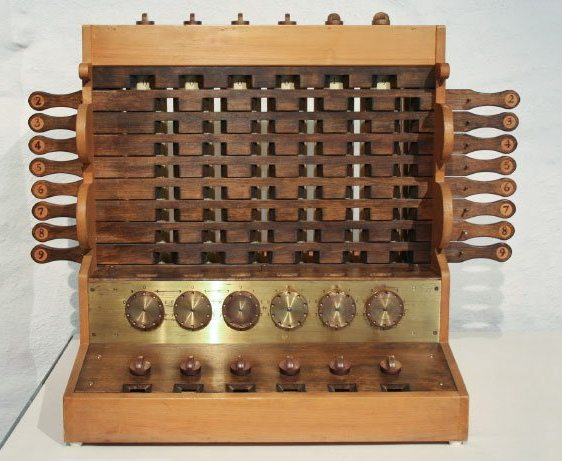

Что такое UX/UI дизайн на самом деле?
Очень много недопонимания в среде дизайнеров и разработчиков. Также много глупых вопросов, связанных с UX и UI у новичков. Часто просто из-за того, что люди не знают сути понятия UX/UI и, не зная о чем говорят, называют вещи не своими именами.
Я хочу раз и навсегда поставить точку и простым понятным языком объяснить, что значит «UX/UI дизайн».
 Разные типы интерфейсов для заточки лезвий.
Разные типы интерфейсов для заточки лезвий.
Нажимаете ли вы кнопки на арифмометре, крутите рукоятку точильного камня или делаете свайп по экрану смартфона — все это интерфейсы, с помощью которых вы взаимодействуете с механизмами. При этом интерфейс совсем не обязательно должен быть цифровым. Просто само слово «интерфейс» было заимствовано из английского совсем недавно и докатилось до нас в только цифровую эпоху.
Цель UI/UX дизайнера — довести пользователя до какой-то логической точки в интерфейсе. Сделать так, чтобы пользователь достиг своей цели.
Что такое UX/UI, прямым текстом
(в этом разделе будут банальные фразы)UX — это User Experience (дословно: «опыт пользователя»). То есть это то, какой опыт/впечатление получает пользователь от работы с вашим интерфейсом. Удается ли ему достичь цели и на сколько просто или сложно это сделать.
А UI — это User Interface (дословно «пользовательский интерфейс») — то, как выглядит интерфейс и то, какие физические характеристики приобретает. Определяет, какого цвета будет ваше «изделие», удобно ли будет человеку попадать пальцем в кнопочки, читабельным ли будет текст и тому подобное…
UX/UI дизайн — это проектирование любых пользовательских интерфейсов в которых удобство использования так же важно как и внешний вид.
Что такое UX и UI дизайн, другими словами
Прямая обязанность UX/UI дизайнера — это, например, «продать» товар или услугу через интерфейс. Именно на основе работы UX/UI дизайнера пользователь принимает решение: «Быть или не быть?» Нравится или не нравится. Купить или не купить.
На самом деле цели дизайнера могут быть разными. Не обязательно что-то «продавать». Но я специально не хочу использовать слишком абстрактные фразы, чтобы этот текст был понятен новичкам; чтобы стиль изложения не превратился в хрестоматию по языку программирования образца 90х годов.
UX/UI дизайн не относится только к смартфонам и веб-сайтам. Более того, профессия UX/UI дизайнера существовала с незапамятных времен. Просто раньше она так не называлась. Точнее, раньше она вообще никак не называлась, а была частью других профессий.
Вот первый пример: когда Вильгельм Шиккард в 1623 году изобретал арифмометр, он уже был UX/UI дизайнером.
Потому что именно он придумывал, какие тумблеры и в какой последовательности должен крутить человек, чтобы получить результат вычислений. И он же придумывал, в каком логическом порядке они будут располагаться. Да и вообще придумывал, как все эти ручки будут выглядеть. Он создал интерфейс для взаимодействия с машиной.
Ещё один более древний и примитивный пример — точильный камень (колесо). Уже даже в раннем средневековье было много разновидностей и механизмов такого колеса:
- его можно было крутить рукояткой вручную
- колесо мог крутить другой человек
- или его можно было раскручивать даже без рук, нажимая педаль ногой
- и другие...
Всё это были разные типы интерфейсов.
Так вот, когда изобретатель очередного точильного камня думал:
- будет ли он сидеть и сам нажимать педаль
- или он упростит механизм, но приставит раба который будет раскручивать колесо рукой,
то в тот момент он был UX дизайнером.
А тот человек, который думал, какой величины будет камень, какого цвета выбрать дерево для подставки и чем скрепить деревянные жерди (гвоздями или кожаными жгутами?) и какой длины будет ручка, был UI дизайнером.
И тот способ, каким бы вы затачивали меч — назывался бы интерфейс.
Разница между UX и UI в том, что UX дизайнер планирует то, как вы будете взаимодействовать с интерфейсом и какие шаги вам нужно предпринять, чтобы сделать что-то. А UI дизайнер придумывает, как каждый из этих шагов будет выглядеть. Как видите из примеров выше, UX и UI так тесно связаны, что иногда грань между понятиями смывается. Поэтому и UX, и UI обычно занимается один дизайнер и его профессия пишется через /.
В последнее время популяризация профессии UX/UI дизайнера связана скорее с развитием цифровых технологий. А вот именно тот «бум» (когда мы стали видеть термин «UX/UI» в каждом втором объявлении о работе) связан с самим названием, которое кто-то придумал совсем недавно.
UI/UX дизайн — это сейчас одна из самых востребованных профессий в цифровой индустрии. Сколько времени она будет востребована зависит от развития этой отрасли. И, судя по всему, она только набирает обороты.
UX и UI — это не тренды. Технологи развиваются. Спрос на сайты растёт. Цифровые приложения появляются как грибы. А инструменты дизайна и разработки упрощаются настолько, что уже практически любой человек без знания программирования может «на коленке» сделать сайт-визитку. Вот только этот сайт должен как-то выглядеть. И не просто как абстрактный каркас из текста и кнопок. Тут программистам и нужна помощь UX/UI дизайнера.
Разделение на веб-дизайнеров и UX/UI дизайнеров появилось с развитием интернета. Со временем понадобились более узкие специалисты, которые делали бы интерфейсы именно для веб-сайтов. Да, UI/UX дизайн — это более широкое и емкое понятие чем веб-дизайн.
P.S. Некоторые люди пишут UI/UX, но я предпочитаю писать UX/UI. И это только потому, что в рабочем процессе сначала делается UX, а потом UI. Но это не важно — пишите как хотите. Главное не путать этот порядок во время самого рабочего процесса. Потому что многие начинающие дизайнеры начинают сначала придумывать какие классные кнопки и фишки будут в их интерфейсе. Но не думают о том, как вообще пользователь будет переходить от одного шага к другому.